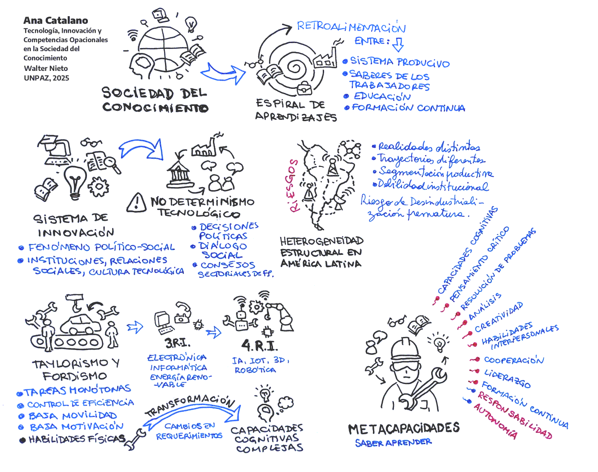

Tecnología, Innovación y Competencias Ocupacionales en la Sociedad del Conocimiento
Ana Catalano. Clase 3.
 audio
audio  original
original  resumen
resumen  IFTF
IFTF  actividad
actividad
 Resumen
🔹 Introducción a la obra de Ana Catalano
El libro "Tecnología, innovación y competencias ocupacionales en la sociedad del conocimiento" parte de una mirada crítica y actualizada sobre el modo en que el trabajo, el conocimiento y la educación se articulan en la sociedad contemporánea.
Catalano propone entender los cambios tecnológicos y productivos no como procesos exclusivamente técnicos o económicos, sino como procesos profundamente sociales, que transforman las formas de producir, de trabajar, de aprender y de vivir.
🧠 ¿Qué es la sociedad del conocimiento?
Es una etapa del desarrollo histórico donde el conocimiento (no el capital, ni el trabajo físico) se convierte en el recurso productivo clave.
Ya no alcanza con dominar herramientas técnicas o saberes específicos: el valor está en saber aprender, adaptarse, resolver, interpretar, comunicar y colaborar.
🔹 Nociones clave del enfoque de Catalano
✅ 1. Espiral de aprendizajes
Catalano describe un sistema dinámico donde el saber se genera, transforma y realimenta constantemente entre:
-
El sistema productivo,
-
Los saberes de los trabajadores,
-
El sistema educativo,
-
Y las políticas públicas.
✅ 2. Tecnología y educación
La autora subraya que la tecnología por sí sola no cambia el trabajo, sino que depende de:
-
Cómo se organiza la producción,
-
Qué políticas públicas se impulsan,
-
Y cómo se articula con la formación continua de los trabajadores.
Es decir, el desarrollo tecnológico requiere sistemas educativos sólidos y flexibles, capaces de acompañar ese cambio.
✅ 3. Las nuevas competencias
En esta sociedad, los trabajadores necesitan lo que Catalano llama metacapacidades, como:
-
Pensamiento crítico,
-
Capacidad de resolución de problemas,
-
Interpretación de datos complejos,
-
Autonomía y autorregulación,
-
Comunicación en distintos lenguajes (digital, simbólico, lógico),
-
Y toma de decisiones con dimensión ética y social.
No basta con habilidades técnicas; se trata de formar sujetos reflexivos, éticos, creativos y colaborativos.
🔹 Su posicionamiento en política educativa
Catalano se ubica claramente en una postura progresista, crítica y propositiva frente a los desafíos del siglo XXI. Plantea que:
-
La educación debe ser pública, inclusiva, de calidad y articulada con el mundo del trabajo, pero sin perder su dimensión humana y social.
-
Propone construir un sistema de formación a lo largo de toda la vida, que comience en la infancia y se extienda hasta la adultez.
-
Defiende la existencia de Consejos Sectoriales, espacios de diálogo entre Estado, trabajadores, empresas y educación, para consensuar qué saberes se deben enseñar y certificar.
-
Considera que la educación técnica y profesional debe vincular la formación general con la formación para el trabajo, sin caer en el reduccionismo de enseñar solo "lo útil".
🧩 En síntesis:
Ana Catalano interpreta la sociedad del conocimiento como una etapa donde el conocimiento es el eje central del trabajo, y por tanto, la educación debe ser el motor que garantice igualdad de oportunidades, inclusión social y competitividad productiva.
Su obra invita a pensar una nueva política educativa, que no forme solamente para el empleo, sino para la ciudadanía crítica y el desarrollo humano integral, en un contexto de cambio permanente.
1. Introducción
Idea central:
El punto de partida es el debate sobre el futuro del trabajo y cómo este nos obliga a repensar el concepto de calificación laboral. Catalano se apoya en la Sociología del Trabajo para reflexionar sobre una preocupación histórica: la tendencia a la descalificación del trabajador, especialmente cuando el avance tecnológico le quita control, autonomía y saber sobre su tarea.
Puntos clave:
-
La automatización y el uso de tecnologías han reducido la autonomía del trabajador, especialmente en relación al ritmo de trabajo y las decisiones sobre cómo realizarlo.
-
Pero las calificaciones no dependen solo de la tecnología: están atravesadas por muchas otras dimensiones sociales e institucionales (como la educación, las regulaciones laborales, el mercado de trabajo, etc.).
-
El sistema de innovación no es solo técnico: es también político y social. Supone un nuevo paradigma que incluye el desarrollo de capacidades, instituciones y relaciones entre actores diversos.
Resumen con tus palabras:
Catalano propone que la discusión sobre la calificación laboral no puede limitarse a lo que exige una tecnología específica, sino que debe entenderse en un contexto más amplio, donde intervienen decisiones sociales, políticas y educativas. Además, alerta sobre los riesgos de ver la automatización solo como pérdida de empleo, sin considerar los cambios en las habilidades que demanda.
2. Cambio de paradigma de los modelos productivos y cualificaciones
Idea central:
Se describe cómo los modelos clásicos de producción (taylorismo, fordismo, toyotismo) se organizaban en torno a la eficiencia y el control del trabajo, y cómo en la actualidad se impone un modelo basado en el conocimiento, la innovación y el aprendizaje continuo.
Puntos clave:
-
Los modelos tradicionales fueron importantes para organizar el trabajo y movilizar el saber tácito del trabajador, pero tenían límites (tareas monótonas, poca movilidad, baja motivación).
-
A partir de los años 80 y con el crecimiento del sector servicios, las calificaciones comenzaron a requerir habilidades múltiples: técnicas, de gestión, de trabajo en equipo y sociales.
-
En la sociedad del conocimiento, el trabajador debe usar la tecnología de forma intensiva y tener capacidad de responder con criterio, no solo ejecutar tareas.
-
Las nuevas formas de producción valoran la autonomía, la formación transversal, la actualización constante, y la capacidad de resolver problemas en red.
-
El desarrollo de un sistema de innovación eficaz exige instituciones sólidas, políticas públicas activas y un sistema educativo que prepare para estos nuevos desafíos.
-
La automatización no destruye todos los trabajos, pero sí modifica su contenido, volviéndolos más complejos y exigentes en términos de calificación.
-
Finalmente, advierte que el cambio tecnológico no es inevitable ni neutro, sino que depende de las decisiones sociales y políticas. La clave está en las relaciones institucionales que sostienen el cambio.
Resumen:
Este segundo punto muestra cómo pasamos de modelos de trabajo cerrados y jerárquicos a modelos abiertos y colaborativos. Hoy, el conocimiento y la capacidad de aprendizaje continuo son más valiosos que la simple ejecución de tareas. Las políticas públicas, la educación y las instituciones deben actuar coordinadamente para que esta transformación no genere exclusión ni precarización.
3. Cambio tecnológico, empleo y cualificaciones
La Tercera Revolución Industrial (décadas de 1970 y 1980)
-
Contexto tecnológico:
Se consolidaron avances en campos como la energía nuclear y renovable, las ciencias espaciales, nuevos materiales, informática, microelectrónica y biotecnología. -
Convergencia de tecnologías:
Las nuevas tecnologías de comunicación se difundieron de forma extensa en la industria, los servicios (financieros, administrativos, salud) y el sector agropecuario. -
Impacto:
Esta revolución abrió el camino para una mayor integración de la tecnología en procesos productivos, marcando un antes y un después en la forma en que se organizaban las actividades laborales.
La Cuarta Revolución Industrial (Industria 4.0)
-
Base y profundización:
Se apoya en los avances previos pero profundiza en el desarrollo de sistemas ciberfísicos. -
Tecnologías clave:
Incluye la inteligencia artificial (IA), robótica, Internet de las Cosas (IoT), cloud computing, impresión 3D, nanotecnología, y la integración de sensores con software avanzado. -
Características distintivas:
-
Interoperabilidad: Conexión y comunicación entre máquinas, dispositivos y personas.
-
Transparencia de la información: Creación de réplicas virtuales del entorno físico a través de datos en tiempo real.
-
Asistencia técnica: Sistemas que apoyan tanto la agregación de información como la ejecución de tareas difíciles o riesgosas.
-
Decisiones descentralizadas: Capacidad de los sistemas ciberfísicos para tomar decisiones de forma autónoma, liberando a los operadores humanos para intervenciones puntuales.
-
-
Visiones contrapuestas:
Existen posturas optimistas sobre la capacidad de estas tecnologías para mejorar la calidad de vida y la eficiencia, y visiones catastrofistas que alertan sobre la posibilidad de un mundo dominado por máquinas sin un marco ético.
Nuevos desafíos y la necesidad de nuevas capacidades
-
Transición en el perfil del trabajador:
Las tecnologías digitales y la automatización no eliminan necesariamente los empleos, sino que transforman las tareas. -
Nuevas habilidades requeridas:
-
Capacidades cognitivas: Pensamiento crítico, análisis, creatividad y resolución de problemas.
-
Habilidades interpersonales: Comunicación, cooperación y liderazgo, especialmente en entornos de trabajo en red.
-
Formación continua: La rápida evolución tecnológica exige una actualización permanente de conocimientos y habilidades.
-
-
Generaciones en el mercado laboral:
Se destaca la llegada de millennials (Generación Y) y la futura incorporación masiva de la Generación Z, quienes deberán interactuar con modelos de trabajo muy distintos a los tradicionales.
Reconfiguración de las tareas y el impacto de la automatización
-
Clasificación de tareas (según Apella y Zunino, 2017):
-
Tareas manuales rutinarias:
- Bajo nivel de calificación y fácilmente automatizables (p. ej., ensamblaje en manufactura).
-
Tareas manuales no rutinarias:
- Requieren experiencia, adaptación y habilidades de interacción, aunque la automatización avanza también en estas áreas.
-
Tareas cognitivas rutinarias:
- Actividades repetitivas y estructuradas que pueden ser programadas (como tareas administrativas).
-
Tareas cognitivas no rutinarias:
- Demandantes en análisis, creatividad y toma de decisiones; son las menos susceptibles a la automatización.
-
-
El papel de los conocimientos tácitos:
Muchas habilidades y saberes adquiridos en la práctica son difíciles de codificar en algoritmos, lo que limita la capacidad de las computadoras para reemplazar completamente al trabajador.
Institucionalidad y Políticas Públicas
-
Sistemas de innovación:
La transformación de los modelos productivos no depende únicamente de la tecnología, sino de la articulación de instituciones, políticas públicas y sistemas educativos robustos. -
Papel de las instituciones:
-
Las políticas de formación, ciencia y tecnología deben acompañar la integración de nuevas tecnologías.
-
Es fundamental que existan marcos legales y estrategias de negociación colectiva que aseguren la protección del empleo y la actualización de las cualificaciones.
-
-
Desafíos en regiones con infraestructura limitada:
En contextos como el de algunos países de Latinoamérica, las dificultades para integrar modelos basados en la Industria 4.0 pueden intensificar problemas estructurales, generando riesgos de descentralización productiva y precarización laboral.
Conclusión
El punto 3 enfatiza que las transformaciones tecnológicas —desde la Tercera hasta la Cuarta Revolución Industrial— han reconfigurado el panorama del empleo y la naturaleza de las cualificaciones laborales. La automatización y los sistemas ciberfísicos no se limitan a sustituir tareas rutinarias, sino que impulsan la necesidad de que los trabajadores desarrollen capacidades más complejas, que integren conocimientos técnicos, habilidades cognitivas y competencias interpersonales. Además, para aprovechar plenamente el potencial de estas tecnologías y evitar consecuencias negativas en el empleo, resulta esencial un acompañamiento institucional robusto, con políticas públicas y un sistema educativo que promueva la formación continua y la adaptación a los cambios.
4: El futuro del trabajo – Evolución de las cualificaciones
1. Contexto general
Catalano describe cómo la transformación tecnológica, especialmente en la sociedad del conocimiento, está alterando profundamente las cualificaciones requeridas por el mundo del trabajo. Esto ocurre de forma distinta en países desarrollados y en desarrollo, pero con un trasfondo común: el avance tecnológico exige una mayor calificación y una reconversión constante de las habilidades.
2. Situación en países desarrollados
-
Se automatizan tareas rutinarias.
-
Se tercerizan los trabajos menos calificados hacia países o sectores externos.
-
Se fortalece la demanda de cualificaciones medias y altas, con competencias como autonomía, responsabilidad, conocimiento y toma de decisiones.
-
Se requieren capacidades cognitivas no rutinarias: análisis, resolución de problemas, creatividad, trabajo colaborativo.
-
Las tecnologías no reemplazan completamente al trabajador, pero modifican radicalmente su rol.
3. Situación en países en desarrollo
-
Aumentan empleos de baja calificación en algunas ramas productivas.
-
También hay una demanda creciente, aunque menor, de calificaciones medias y altas.
-
Se plantea como estrategia clave la mejora de la fuerza laboral: diversificación productiva + formación en niveles medios y altos para mejorar empleabilidad, negociación y condiciones laborales.
4. Tensiones y decisiones políticas
-
¿Se viene una polarización de las cualificaciones o una consolidación de las calificaciones medias?
-
No hay un único camino: la tecnología no impone un destino inevitable.
-
Las decisiones sobre innovación y educación son políticas, y deben involucrar al sistema educativo, los empresarios, los sindicatos y el Estado.
5. Capacitación para un futuro incierto
-
No se sabe con precisión qué competencias específicas se necesitarán.
-
Por eso, se valora la capacidad de aprender a aprender y transferir conocimientos.
-
Las habilidades interpersonales y cognitivas serán esenciales para interactuar con TICs, algoritmos, y gestionar información.
6. Datos del CEDEFOP (Unión Europea)
-
Las cualificaciones altas lideran la demanda hasta 2025.
-
Las medias se mantienen por la necesidad de reemplazo, no por expansión.
-
Las bajas están en retracción y deben reconvertirse hacia niveles medios.
-
Se necesita duplicar el número de personas con calificaciones altas por jubilación y expansión.
7. Estudio de Apella y Zunino (Argentina y Uruguay, 1995-2015)
-
Cambio profundo en las tareas laborales: aumento de las cognitivas, caída de las manuales.
-
En Argentina, las crisis económicas interrumpieron el crecimiento de tareas cognitivas y forzaron el retorno a tareas manuales de subsistencia.
-
En ambos países, se destaca el crecimiento de las tareas cognitivas no rutinarias, especialmente las analíticas.
-
Clasifican actividades en: cognitivas (rutinarias/no rutinarias) y manuales (rutinarias/no rutinarias), con características específicas.
En el contexto de la sociedad del conocimiento, la evolución de las cualificaciones laborales se presenta como un proceso dinámico que redefine los perfiles de empleo. En los países desarrollados, el avance tecnológico y la descentralización productiva han llevado a la automatización de tareas rutinarias y al desplazamiento de trabajos menos calificados a sectores o regiones externas. Esto ha concentrado la demanda de cualificaciones en los niveles medio y alto, exigiendo competencias complejas como autonomía, responsabilidad, capacidad de análisis y toma de decisiones. La automatización no necesariamente reemplaza al trabajador, pero modifica su rol y lo obliga a adquirir habilidades cognitivas no rutinarias.
En los países en desarrollo, en cambio, la incorporación de tecnología y la participación en cadenas globales de valor han generado una reconfiguración de las cualificaciones: en algunos sectores aumentaron los puestos de baja calificación, mientras que en otros se expandió la demanda de calificaciones medias y, en menor medida, altas. Por ello, una estrategia clave para países como Argentina es fortalecer la calidad de la fuerza laboral a través de la diversificación productiva y la formación en niveles medio y alto, para mejorar las condiciones de empleo, estabilidad y negociación.
El futuro del trabajo no está determinado exclusivamente por la tecnología, sino que depende de decisiones políticas que deben ser acompañadas por el sistema educativo, el sector productivo, empresarios y sindicatos. En este escenario, los sistemas educativos y de formación profesional deben enfocarse en desarrollar capacidades de aprendizaje permanente y transferencia de conocimientos, ya que muchas competencias específicas del futuro aún se desconocen. Las relaciones interpersonales, la creatividad y la resolución de problemas cobrarán mayor relevancia, y los trabajadores deberán actuar como gestores tecnológicos en constante interacción con máquinas inteligentes.
Según datos del CEDEFOP, en la Unión Europea la demanda de cualificaciones altas se incrementará significativamente hasta 2025, mientras que las medias se mantendrán por necesidades de reemplazo, y las bajas están en claro retroceso. Se requerirá duplicar la cantidad de personas con cualificaciones altas para cubrir jubilaciones y nuevas vacantes.
Por su parte, el estudio de Apella y Zunino (2017) sobre Argentina y Uruguay entre 1995 y 2015 muestra que el perfil del empleo ha cambiado, con un aumento de tareas cognitivas —especialmente las no rutinarias— y una reducción de las tareas manuales. Las crisis económicas en Argentina, como la de 2001-2002, interrumpieron esta tendencia y forzaron un retorno a trabajos manuales de subsistencia. Sin embargo, en general, se observa una evolución hacia empleos que requieren mayores niveles de escolaridad y habilidades analíticas, en línea con las transformaciones observadas en los países desarrollados. Las cualificaciones se redefinen en función de la combinación entre demandas tecnológicas, organizacionales y educativas, destacándose la necesidad de capacidades cognitivas, tanto rutinarias como no rutinarias, y de habilidades interpersonales cada vez más valoradas en el mundo laboral actual.
5. El Futuro del Trabajo Futuro
1. Transformación del concepto de cualificación laboral
Ana Catalano identifica cuatro grandes transformaciones históricas en la noción de cualificación:
-
Primera etapa
-
Predominio de habilidades físicas y cognitivas básicas.
-
Aprendizaje centrado en el oficio y la repetición de tareas.
-
-
Segunda etapa
-
Incorporación de conocimientos técnicos más sistemáticos.
-
Mayor formalización de saberes ligados a procesos productivos.
-
-
Tercera etapa
-
Énfasis en capacidades cognitivas más complejas.
-
Necesidad de comprender procesos, no solo ejecutar tareas.
-
-
Cuarta etapa (actual)
-
Exigencia de aprendizaje permanente.
-
Capacidad de transferir saberes entre contextos.
-
Interacción con sistemas inteligentes y tecnologías avanzadas.
-
➡️ Esta evolución redefine las categorías profesionales y supera el enfoque tradicional centrado en tareas específicas.
2. Nuevas exigencias para los trabajadores
En el contexto actual, se espera que los trabajadores puedan:
-
Integrar conocimientos de distintas áreas.
-
Tomar decisiones fundamentadas.
-
Comunicar ideas y procesos de manera clara.
-
Aprender y enseñar de forma continua.
-
Actuar con autonomía y autorresponsabilidad.
3. Factores que transforman el trabajo según el Instituto para el Futuro (IFTF)
El IFTF identifica varios factores estructurales que impactan en el mundo laboral:
-
Aumento de la longevidad.
-
Aparición de máquinas inteligentes.
-
Expansión del entorno computacional.
-
Nuevas formas de alfabetización digital.
-
Producción mediada por tecnologías sociales.
-
Globalización de los procesos productivos.
4. Diez habilidades clave para el futuro del trabajo
Frente a este escenario, el IFTF destaca diez metacompetencias:
-
Creación de sentido.
-
Inteligencia social.
-
Pensamiento innovador.
-
Competencias interculturales.
-
Pensamiento computacional.
-
Alfabetización mediática.
-
Enfoque interdisciplinario.
-
Mentalidad de diseño.
-
Gestión de la carga cognitiva.
-
Colaboración virtual.
➡️ Estas habilidades no se adquieren solo desde la formación técnica, sino que requieren repensar los métodos educativos.
5. Implicancias para la formación
-
Las competencias del futuro ya se desarrollan en sectores como la robótica y el software.
-
El desafío principal no es qué enseñar, sino cómo formar estas nuevas cualificaciones.
-
La velocidad de producción del conocimiento supera su transmisión y aplicación.
-
Se requieren metodologías activas basadas en:
-
Investigación.
-
Análisis.
-
Toma de decisiones.
-
Argumentación.
-
6. El Marco Europeo de Cualificaciones
Catalano incorpora el Marco Europeo de Cualificaciones, que propone:
-
Ocho niveles de formación articulados.
-
Integración entre educación formal y no formal.
-
Definición de:
-
Conocimientos.
-
Habilidades.
-
Grados de autonomía.
-
➡️ Este marco funciona como referencia para:
-
La formación continua.
-
La evaluación de aprendizajes.
-
La adecuación entre formación y trabajo.
El punto 5 aborda la evolución del concepto de cualificación en el mundo laboral, identificando cuatro grandes transformaciones: desde las habilidades físicas y cognitivas propias del oficio, hasta la exigencia actual de capacidades cognitivas complejas orientadas al aprendizaje permanente, la transferencia de saberes y la interacción con sistemas inteligentes. Este cambio transforma profundamente los requerimientos laborales y redefine las categorías profesionales, superando el enfoque tradicional centrado en tareas específicas. Hoy se espera que los trabajadores integren conocimientos de distintas áreas, tomen decisiones fundamentadas, comuniquen sus ideas, aprendan y enseñen constantemente, y sean autónomos y responsables.
El Instituto para el Futuro (IFTF) señala varios factores que están transformando el trabajo, como el aumento de la longevidad, la aparición de máquinas inteligentes, el entorno computacional, las nuevas formas de alfabetización digital, la producción mediada por tecnologías sociales y la globalización. Frente a este panorama, se destacan diez habilidades clave para el futuro: creación de sentido, inteligencia social, pensamiento innovador, competencias interculturales, pensamiento computacional, alfabetización mediática, enfoque interdisciplinario, mentalidad de diseño, gestión de la carga cognitiva y colaboración virtual. Estas metacompetencias no se aprenden solo desde lo técnico, sino que exigen repensar los métodos educativos para desarrollar capacidades analíticas, creativas y de resolución de problemas.
Se plantea que las competencias del futuro ya están en construcción en sectores como la robótica y el software, y que el desafío no es tanto qué contenidos enseñar, sino cómo formar estas nuevas cualificaciones. La velocidad de producción de conocimientos supera la de su transmisión y aplicación, lo que exige metodologías activas centradas en la investigación, el análisis, la toma de decisiones y la argumentación.
Finalmente, se menciona el Marco Europeo de Cualificaciones, que propone ocho niveles de formación articulados entre el sistema educativo formal y el no formal. Cada nivel incluye conocimientos, habilidades y grados de autonomía, y actúa como referencia para orientar la formación continua, la evaluación de los aprendizajes y la adecuación entre formación y trabajo. Este enfoque busca definir con claridad qué capacidades debe tener una persona para desempeñarse competentemente en distintos niveles del sistema productivo y educativo.